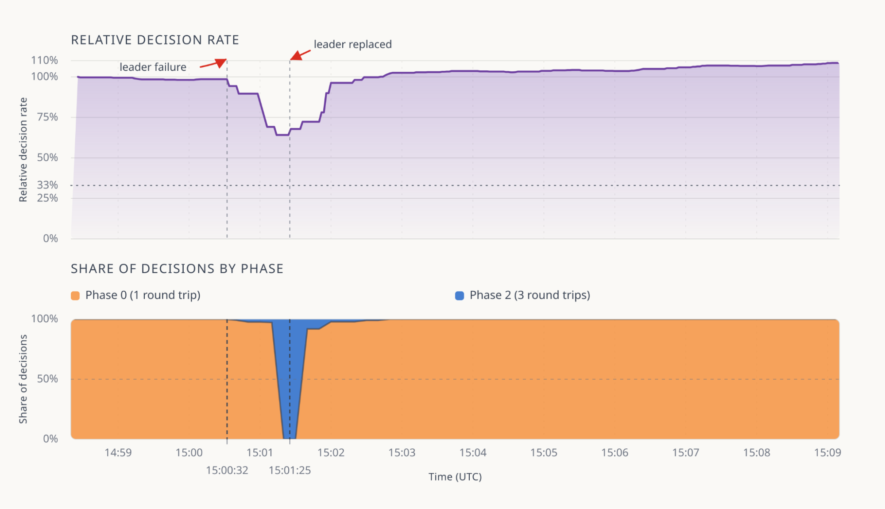

QuePaxa trades Raft's election stall for a minute of slower decisions
In Cloudflare's evaluation of its experimental Meerkat service, a failed leader cut the decision rate to about 65% of normal, while a Raft cluster commits nothing until its election timeout fires.
A leader fails and the log keeps moving
At 15:00:32 UTC the leader of a QuePaxa cluster failed, and the cluster went on deciding. Over the next 53 seconds its decision rate stepped down to about 65% of normal, and it recovered once the leader was replaced at 15:01:25.1 A Raft cluster that loses its leader commits nothing until it elects a new one, roughly an election timeout later.2 QuePaxa gives up that stall and pays with a stretch of slower deciding.
The run comes from Cloudflare's evaluation of Meerkat, "an experimental distributed consensus service" for its internal global control plane.1 Its July introduction says "Meerkat is not deployed to production".3 QuePaxa comes from a SOSP 2023 paper by Tennage and six co-authors.4
The case for an election timeout
Raft's designers state the cost: "When the leader crashes, the system will be unavailable for roughly the election timeout; we would like this to represent only a small fraction of overall time." They keep it so by setting the timeout orders of magnitude below server MTBFs of "several months or more".2
Cloudflare's motivation is a 2020 outage. A partially failed switch caused repeated split elections in a three-node etcd cluster, which "made the cluster read-only until the faulty switch recovered", six minutes later. The 6 hours 33 minutes of API and dashboard impact came from a database failover that this set off.5 The November post folds both into "six hours".1 Howard and Abraham then showed that Raft with PreVote and CheckQuorum keeps a stable leader under partial connectivity.6 etcd has enabled PreVote by default since v3.5.0 (June 2021) and always sets CheckQuorum.7 Neither fix removes the election timeout after a leader crash.
That timeout cannot shrink to fit the network. In the QuePaxa paper's test, the authors' own Raft and Multi-Paxos lost throughput, then liveness, once the timeout neared the round-trip time.4
| Who | Rule or finding | What it rests on |
|---|---|---|
| Raft paper | 150–300 ms recommended | Five servers, ~15 ms broadcast time |
| etcd docs | At least 10× RTT; default 1,000 ms | Operating guidance |
| Cloudflare | "Commonly" 5 to 10× RTT | Uncited |
| QuePaxa paper | 25k cmd/s above 330 ms (about 1.8× RTT); "fail to stabilize" below 200 ms | Authors' Raft and Multi-Paxos, 180 ms average RTT |
At the QuePaxa paper's 180 ms round trip, etcd's rule implies a stall of at least 1.8 seconds, a derived figure nobody has measured.
One round trip for the leader, three for anyone else
QuePaxa decides each log slot in rounds of four phases, each one round trip between a proposer and a majority of recorders, the replicas that hold proposals. In round 1 the leader's proposal carries top priority, and if it reaches a quorum first it is decided in phase 0, the fast path. Any proposer can decide in phase 2. A round that decides nothing carries its best proposal forward. Later rounds have no leader, and each decides with probability at least 1/2 even in the paper's worst case.4
The hedging delay replaces the timeout. The leader proposes at once, the second proposer after a delay δ, the third after 2δ, each only if it has seen no progress. Set the delay too small and consensus stays live, "the only costs being redundant proposer effort and lower fast-path success probability".4 Cloudflare says upwards of 95% of Meerkat's decisions come from the leader in phase 0.1
Two shapes of one failure

By the replacement, nearly all decisions came from phase 2 and the rate had bottomed near 65%. The dotted 33% line is Cloudflare's limit, reasoned from three round trips in place of one: "down to at most a third of the usual rate".1 The measured low was about twice that, and the post does not say why. It also gives no cluster size, round-trip time, load, hedge delay, averaging window or kind of failure.
Setting the shapes side by side is this paper's inference, and nobody has measured Raft in Cloudflare's setting. The QuePaxa panel also joins two events. The QuePaxa paper's 303 to 473 ms runs from a leader crash to the first progress by any proposer, on five replicas with a 180 ms round trip.4 Cloudflare's 53 seconds runs from failure to replacement, and Cloudflare publishes no crash-to-first-decision gap.1
Either protocol must still replace a failed leader. Raft holds every write until then, and cutting the timeout to shorten the wait risks the liveness failure the QuePaxa paper measured below 200 ms. QuePaxa lets another proposer decide in the meantime, so replacement time sets how long the cluster runs slower, and a hedging delay set too short costs bandwidth, not liveness.4 In Cloudflare's one published run, the decision rate fell no lower than about 65%, and Cloudflare reports that the system never halted.1
Sources
- Cloudflare · Leite, Halley and Larisch, “Choosing QuePaxa, an unusual consensus algorithm” (11 November 2026)
- USENIX ATC 2014 · Ongaro and Ousterhout, “In Search of an Understandable Consensus Algorithm”
- Cloudflare · Larisch, Halley and Leite, “Introducing Meerkat- an experiment in global consensus”
- SOSP 2023 · Tennage, Băsescu, Kokoris-Kogias, Syta, Jovanovic, Estrada-Galiñanes and Ford, “QuePaxa: Escaping the Tyranny of Timeouts in Consensus”
- Cloudflare · Lianza and Snook, “A Byzantine failure in the real world” (27 November 2020)
- Decentralized Thoughts · Howard and Abraham, “Raft does not Guarantee Liveness in the face of Network Faults” (12 December 2020)
- etcd · CHANGELOG-3.5 and server source
- etcd · “Tuning”, v3.5 docs